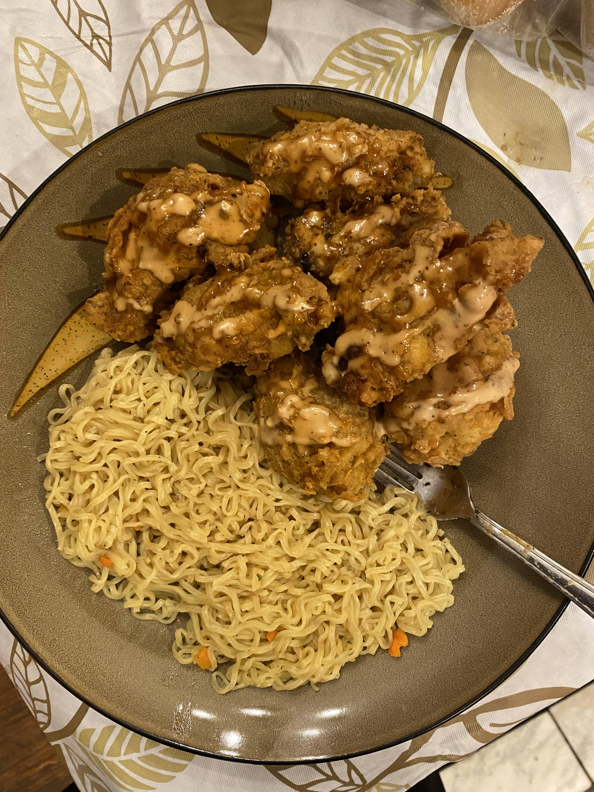

Cooking is something that I discovered 4 years ago...
I came to the US in 2018, and I did not know how to cook at that time. I only knew how to make eggs. So I needed to learn how to cook since everybody was so busy. I taught myself how to cook through YouTube videos, but I also got help from my mother back home through video calls. Once I started feeling comfortable with cooking, I started searching for new recipes. And the more I discovered, the more I enjoyed it.
Even though I like ordering food sometimes, making my own meal is something that I enjoy most of the time. This is a picture of some noodles and crispy chicken that I made for Thursday Night Football